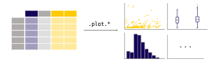
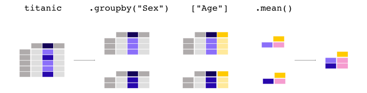

Getting Started (official)
Contents
2. Getting Started (official)¶
這份文件，摘錄自官網的 Getting started tutorials
import pandas as pd
import matplotlib.pyplot as plt
2.1. Pandas 處理哪種 data？¶
處理 tabular data ，如下：

2.1.1. DataFrame¶
建立 DataFrame 的方式，由 dictionary 來處理：
df = pd.DataFrame(
{
"Name": [
"Braund, Mr. Owen Harris",
"Allen, Mr. William Henry",
"Bonnell, Miss. Elizabeth",
],
"Age": [22, 35, 58],
"Sex": ["male", "male", "female"],
}
)
print(df)
print(type(df))
Name Age Sex
0 Braund, Mr. Owen Harris 22 male
1 Allen, Mr. William Henry 35 male
2 Bonnell, Miss. Elizabeth 58 female
<class 'pandas.core.frame.DataFrame'>
這其實就和 excel 一樣:

2.1.2. Series¶
每一個 column，都是一個
Series
要注意，series還是帶有 row index。例如：
df["Age"]
0 22
1 35
2 58
Name: Age, dtype: int64
如果，你想自己建立一個 series，可以這樣做：
ages = pd.Series([22, 35, 58], name="Age")
ages
0 22
1 35
2 58
Name: Age, dtype: int64
2.1.3. 一些基礎 methods¶
對 Series，我們可以進行 numpy 的那些常見 function，例如：
df["Age"].max()
58
對 DataFrame，我們可以看一下連續型欄位的 basic statistics
df.describe()
| Age | |
|---|---|
| count | 3.000000 |
| mean | 38.333333 |
| std | 18.230012 |
| min | 22.000000 |
| 25% | 28.500000 |
| 50% | 35.000000 |
| 75% | 46.500000 |
| max | 58.000000 |
2.2. 如何 讀寫 tabular data？¶

如上圖，
read_*就讀進來，用to_*就寫出去
2.2.1. csv¶
titanic = pd.read_csv("data/titanic.csv")
titanic.head()
| PassengerId | Survived | Pclass | Name | Sex | Age | SibSp | Parch | Ticket | Fare | Cabin | Embarked | |
|---|---|---|---|---|---|---|---|---|---|---|---|---|
| 0 | 1 | 0 | 3 | Braund, Mr. Owen Harris | male | 22.0 | 1 | 0 | A/5 21171 | 7.2500 | NaN | S |
| 1 | 2 | 1 | 1 | Cumings, Mrs. John Bradley (Florence Briggs Th... | female | 38.0 | 1 | 0 | PC 17599 | 71.2833 | C85 | C |
| 2 | 3 | 1 | 3 | Heikkinen, Miss. Laina | female | 26.0 | 0 | 0 | STON/O2. 3101282 | 7.9250 | NaN | S |
| 3 | 4 | 1 | 1 | Futrelle, Mrs. Jacques Heath (Lily May Peel) | female | 35.0 | 1 | 0 | 113803 | 53.1000 | C123 | S |
| 4 | 5 | 0 | 3 | Allen, Mr. William Henry | male | 35.0 | 0 | 0 | 373450 | 8.0500 | NaN | S |
titanic.tail()
| PassengerId | Survived | Pclass | Name | Sex | Age | SibSp | Parch | Ticket | Fare | Cabin | Embarked | |
|---|---|---|---|---|---|---|---|---|---|---|---|---|
| 886 | 887 | 0 | 2 | Montvila, Rev. Juozas | male | 27.0 | 0 | 0 | 211536 | 13.00 | NaN | S |
| 887 | 888 | 1 | 1 | Graham, Miss. Margaret Edith | female | 19.0 | 0 | 0 | 112053 | 30.00 | B42 | S |
| 888 | 889 | 0 | 3 | Johnston, Miss. Catherine Helen "Carrie" | female | NaN | 1 | 2 | W./C. 6607 | 23.45 | NaN | S |
| 889 | 890 | 1 | 1 | Behr, Mr. Karl Howell | male | 26.0 | 0 | 0 | 111369 | 30.00 | C148 | C |
| 890 | 891 | 0 | 3 | Dooley, Mr. Patrick | male | 32.0 | 0 | 0 | 370376 | 7.75 | NaN | Q |
2.2.2. excel¶
記得要先安裝
openpyxl，才能順利讀寫我們可以把剛剛的
titanicDataFrame 先寫成 excel
titanic.to_excel("data/titanic.xlsx", sheet_name="passengers", index=False)
然後，我們把他讀進來看看
titanic = pd.read_excel("data/titanic.xlsx", sheet_name="passengers")
titanic.head()
| PassengerId | Survived | Pclass | Name | Sex | Age | SibSp | Parch | Ticket | Fare | Cabin | Embarked | |
|---|---|---|---|---|---|---|---|---|---|---|---|---|
| 0 | 1 | 0 | 3 | Braund, Mr. Owen Harris | male | 22.0 | 1 | 0 | A/5 21171 | 7.2500 | NaN | S |
| 1 | 2 | 1 | 1 | Cumings, Mrs. John Bradley (Florence Briggs Th... | female | 38.0 | 1 | 0 | PC 17599 | 71.2833 | C85 | C |
| 2 | 3 | 1 | 3 | Heikkinen, Miss. Laina | female | 26.0 | 0 | 0 | STON/O2. 3101282 | 7.9250 | NaN | S |
| 3 | 4 | 1 | 1 | Futrelle, Mrs. Jacques Heath (Lily May Peel) | female | 35.0 | 1 | 0 | 113803 | 53.1000 | C123 | S |
| 4 | 5 | 0 | 3 | Allen, Mr. William Henry | male | 35.0 | 0 | 0 | 373450 | 8.0500 | NaN | S |
看一下這張 table 的欄位摘要：
titanic.info()
<class 'pandas.core.frame.DataFrame'>
RangeIndex: 891 entries, 0 to 890
Data columns (total 12 columns):
# Column Non-Null Count Dtype
--- ------ -------------- -----
0 PassengerId 891 non-null int64
1 Survived 891 non-null int64
2 Pclass 891 non-null int64
3 Name 891 non-null object
4 Sex 891 non-null object
5 Age 714 non-null float64
6 SibSp 891 non-null int64
7 Parch 891 non-null int64
8 Ticket 891 non-null object
9 Fare 891 non-null float64
10 Cabin 204 non-null object
11 Embarked 889 non-null object
dtypes: float64(2), int64(5), object(5)
memory usage: 83.7+ KB
第一列告訴你他的型別是
DataFrame.第二列告訴你他的 row index 從 0 ~ 890 (共 891 個 row)
第三列告訴你有 12 個 column.
第四列開始，摘要每個欄位的資訊.
Non-Null Count 可以讓你看到大部分的 column都沒有 missing (891 non-null)，但
Age,Cabin,Embarked有 missingDtype 可以讓你看到每個 column 的 type。
object的意思，就是文字型/類別型資料;int64是整數型資料，float64是real number型資料
倒數第二列，幫你摘要變數的 type，對統計分析來說，就知道數值型資料有 7 個 (float64 + int64)，類別型有 5 個 (object)
最後一列告訴你 memory usage 是 84 kb 左右
2.3. 如何 select/filter¶
2.3.1. select 特定 column¶

age_sex = titanic[["Age", "Sex"]]
age_sex.head()
| Age | Sex | |
|---|---|---|
| 0 | 22.0 | male |
| 1 | 38.0 | female |
| 2 | 26.0 | female |
| 3 | 35.0 | female |
| 4 | 35.0 | male |
2.3.2. filter 特定 row¶

above_35 = titanic[titanic["Age"] > 35]
above_35.head()
| PassengerId | Survived | Pclass | Name | Sex | Age | SibSp | Parch | Ticket | Fare | Cabin | Embarked | |
|---|---|---|---|---|---|---|---|---|---|---|---|---|
| 1 | 2 | 1 | 1 | Cumings, Mrs. John Bradley (Florence Briggs Th... | female | 38.0 | 1 | 0 | PC 17599 | 71.2833 | C85 | C |
| 6 | 7 | 0 | 1 | McCarthy, Mr. Timothy J | male | 54.0 | 0 | 0 | 17463 | 51.8625 | E46 | S |
| 11 | 12 | 1 | 1 | Bonnell, Miss. Elizabeth | female | 58.0 | 0 | 0 | 113783 | 26.5500 | C103 | S |
| 13 | 14 | 0 | 3 | Andersson, Mr. Anders Johan | male | 39.0 | 1 | 5 | 347082 | 31.2750 | NaN | S |
| 15 | 16 | 1 | 2 | Hewlett, Mrs. (Mary D Kingcome) | female | 55.0 | 0 | 0 | 248706 | 16.0000 | NaN | S |
class_23 = titanic[titanic["Pclass"].isin([2, 3])]
class_23.head()
| PassengerId | Survived | Pclass | Name | Sex | Age | SibSp | Parch | Ticket | Fare | Cabin | Embarked | |
|---|---|---|---|---|---|---|---|---|---|---|---|---|
| 0 | 1 | 0 | 3 | Braund, Mr. Owen Harris | male | 22.0 | 1 | 0 | A/5 21171 | 7.2500 | NaN | S |
| 2 | 3 | 1 | 3 | Heikkinen, Miss. Laina | female | 26.0 | 0 | 0 | STON/O2. 3101282 | 7.9250 | NaN | S |
| 4 | 5 | 0 | 3 | Allen, Mr. William Henry | male | 35.0 | 0 | 0 | 373450 | 8.0500 | NaN | S |
| 5 | 6 | 0 | 3 | Moran, Mr. James | male | NaN | 0 | 0 | 330877 | 8.4583 | NaN | Q |
| 7 | 8 | 0 | 3 | Palsson, Master. Gosta Leonard | male | 2.0 | 3 | 1 | 349909 | 21.0750 | NaN | S |
age_no_na = titanic[titanic["Age"].notna()]
age_no_na.head()
| PassengerId | Survived | Pclass | Name | Sex | Age | SibSp | Parch | Ticket | Fare | Cabin | Embarked | |
|---|---|---|---|---|---|---|---|---|---|---|---|---|
| 0 | 1 | 0 | 3 | Braund, Mr. Owen Harris | male | 22.0 | 1 | 0 | A/5 21171 | 7.2500 | NaN | S |
| 1 | 2 | 1 | 1 | Cumings, Mrs. John Bradley (Florence Briggs Th... | female | 38.0 | 1 | 0 | PC 17599 | 71.2833 | C85 | C |
| 2 | 3 | 1 | 3 | Heikkinen, Miss. Laina | female | 26.0 | 0 | 0 | STON/O2. 3101282 | 7.9250 | NaN | S |
| 3 | 4 | 1 | 1 | Futrelle, Mrs. Jacques Heath (Lily May Peel) | female | 35.0 | 1 | 0 | 113803 | 53.1000 | C123 | S |
| 4 | 5 | 0 | 3 | Allen, Mr. William Henry | male | 35.0 | 0 | 0 | 373450 | 8.0500 | NaN | S |
2.3.3. select + filter¶

adult_names = titanic.loc[titanic["Age"] > 35, "Name"]
adult_names.head()
1 Cumings, Mrs. John Bradley (Florence Briggs Th...
6 McCarthy, Mr. Timothy J
11 Bonnell, Miss. Elizabeth
13 Andersson, Mr. Anders Johan
15 Hewlett, Mrs. (Mary D Kingcome)
Name: Name, dtype: object
titanic.iloc[9:25, 2:5]
| Pclass | Name | Sex | |
|---|---|---|---|
| 9 | 2 | Nasser, Mrs. Nicholas (Adele Achem) | female |
| 10 | 3 | Sandstrom, Miss. Marguerite Rut | female |
| 11 | 1 | Bonnell, Miss. Elizabeth | female |
| 12 | 3 | Saundercock, Mr. William Henry | male |
| 13 | 3 | Andersson, Mr. Anders Johan | male |
| 14 | 3 | Vestrom, Miss. Hulda Amanda Adolfina | female |
| 15 | 2 | Hewlett, Mrs. (Mary D Kingcome) | female |
| 16 | 3 | Rice, Master. Eugene | male |
| 17 | 2 | Williams, Mr. Charles Eugene | male |
| 18 | 3 | Vander Planke, Mrs. Julius (Emelia Maria Vande... | female |
| 19 | 3 | Masselmani, Mrs. Fatima | female |
| 20 | 2 | Fynney, Mr. Joseph J | male |
| 21 | 2 | Beesley, Mr. Lawrence | male |
| 22 | 3 | McGowan, Miss. Anna "Annie" | female |
| 23 | 1 | Sloper, Mr. William Thompson | male |
| 24 | 3 | Palsson, Miss. Torborg Danira | female |
2.4. 如何畫圖¶
這一章，我們拿 air quality 的資料集來舉例
air_quality = pd.read_csv("data/air_quality_no2.csv", index_col=0, parse_dates=True)
air_quality.head()
| station_antwerp | station_paris | station_london | |
|---|---|---|---|
| datetime | |||
| 2019-05-07 02:00:00 | NaN | NaN | 23.0 |
| 2019-05-07 03:00:00 | 50.5 | 25.0 | 19.0 |
| 2019-05-07 04:00:00 | 45.0 | 27.7 | 19.0 |
| 2019-05-07 05:00:00 | NaN | 50.4 | 16.0 |
| 2019-05-07 06:00:00 | NaN | 61.9 | NaN |

在 pandas 中，只要做
DataFrame.plot.*就可以畫圖，這個星號包括以下幾種：df.plot(): 對每個 column 畫 line plot.series.plot(): 對這個serieis 畫 line plotdf.plot.scatter(x,y): x-y 散布圖df.plot.box()df.plot.hist()df.plot.bar().df.plot.line()df.plot.kde()df.plot.density()
如果想知道到底可以畫哪些圖，可以用
df.plot.<tab>就可以知道有哪些 method 可以用這邊條列所有可用的 method 如下：
[method_name for method_name in dir(air_quality.plot) if not method_name.startswith("_")]
['area',
'bar',
'barh',
'box',
'density',
'hexbin',
'hist',
'kde',
'line',
'pie',
'scatter']
2.4.1. 對整個 df 畫圖 (各欄位的line plot)¶
我如果直接用
air_quality.plot()，那預設的作法是：對每一個 column 都去畫 line plot所以以這個資料集為例，就會畫出3條 time-series plot
air_quality.plot();
2.4.2. 對某個 series 畫圖 (該series line plot)¶
air_quality["station_paris"].plot();
2.4.3. Scatter plot¶
air_quality.plot.scatter(x="station_london", y="station_paris", alpha=0.5);
2.4.4. Box plot¶
air_quality.plot.box(); # 對每個 column 畫圖
2.4.5. Area plot¶
air_quality.plot.area();
2.4.7. 更多客製化¶
如果要做更多客製化，那就要用 matplotlib 的 oop 的寫法
fig, axs = plt.subplots(figsize=(12, 4));
air_quality.plot.area(ax=axs); # 建立連結，pandas畫完的圖，本來就是 matplotlib 物件，現在告訴他我要把這物件更新到外面的 axs
axs.set_ylabel("NO$_2$ concentration");
# fig.savefig("no2_concentrations.png")
2.4.8. 更多細節¶
更多畫圖的細節，請參考 user guide 的 chart Visualization
2.5. 如何新增 column¶
2.5.1. 某個 column 乘上一個常數¶

如上圖，我想新增 column，我可以這樣做：
air_quality["london_mg_per_cubic"] = air_quality["station_london"] * 1.882
air_quality.head()
| station_antwerp | station_paris | station_london | london_mg_per_cubic | |
|---|---|---|---|---|
| datetime | ||||
| 2019-05-07 02:00:00 | NaN | NaN | 23.0 | 43.286 |
| 2019-05-07 03:00:00 | 50.5 | 25.0 | 19.0 | 35.758 |
| 2019-05-07 04:00:00 | 45.0 | 27.7 | 19.0 | 35.758 |
| 2019-05-07 05:00:00 | NaN | 50.4 | 16.0 | 30.112 |
| 2019-05-07 06:00:00 | NaN | 61.9 | NaN | NaN |
2.5.2. 多個 column 間的運算¶

那如果是像上圖，我要用兩個欄位來計算出新欄位，我可以這樣做：
air_quality["ratio_paris_antwerp"] = (
air_quality["station_paris"] / air_quality["station_antwerp"]
)
air_quality.head()
| station_antwerp | station_paris | station_london | london_mg_per_cubic | ratio_paris_antwerp | |
|---|---|---|---|---|---|
| datetime | |||||
| 2019-05-07 02:00:00 | NaN | NaN | 23.0 | 43.286 | NaN |
| 2019-05-07 03:00:00 | 50.5 | 25.0 | 19.0 | 35.758 | 0.495050 |
| 2019-05-07 04:00:00 | 45.0 | 27.7 | 19.0 | 35.758 | 0.615556 |
| 2019-05-07 05:00:00 | NaN | 50.4 | 16.0 | 30.112 | NaN |
| 2019-05-07 06:00:00 | NaN | 61.9 | NaN | NaN | NaN |
2.5.3. rename¶
要對 column name 做 rename 的話，可以這樣做
air_quality_renamed = air_quality.rename(
columns={
"station_antwerp": "BETR801",
"station_paris": "FR04014",
"station_london": "London Westminster",
}
)
air_quality_renamed.head()
| BETR801 | FR04014 | London Westminster | london_mg_per_cubic | ratio_paris_antwerp | |
|---|---|---|---|---|---|
| datetime | |||||
| 2019-05-07 02:00:00 | NaN | NaN | 23.0 | 43.286 | NaN |
| 2019-05-07 03:00:00 | 50.5 | 25.0 | 19.0 | 35.758 | 0.495050 |
| 2019-05-07 04:00:00 | 45.0 | 27.7 | 19.0 | 35.758 | 0.615556 |
| 2019-05-07 05:00:00 | NaN | 50.4 | 16.0 | 30.112 | NaN |
| 2019-05-07 06:00:00 | NaN | 61.9 | NaN | NaN | NaN |
我也可以用 function，把 column name 都轉小寫：
air_quality_renamed = air_quality_renamed.rename(columns=str.lower)
air_quality_renamed.head()
| betr801 | fr04014 | london westminster | london_mg_per_cubic | ratio_paris_antwerp | |
|---|---|---|---|---|---|
| datetime | |||||
| 2019-05-07 02:00:00 | NaN | NaN | 23.0 | 43.286 | NaN |
| 2019-05-07 03:00:00 | 50.5 | 25.0 | 19.0 | 35.758 | 0.495050 |
| 2019-05-07 04:00:00 | 45.0 | 27.7 | 19.0 | 35.758 | 0.615556 |
| 2019-05-07 05:00:00 | NaN | 50.4 | 16.0 | 30.112 | NaN |
| 2019-05-07 06:00:00 | NaN | 61.9 | NaN | NaN | NaN |
2.6. 如何做 summary statistics¶
2.6.1. aggregating statistics¶

titanic["Age"].mean()
29.69911764705882

titanic[["Age", "Fare"]].median()
Age 28.0000
Fare 14.4542
dtype: float64
titanic[["Age", "Fare"]].describe()
| Age | Fare | |
|---|---|---|
| count | 714.000000 | 891.000000 |
| mean | 29.699118 | 32.204208 |
| std | 14.526497 | 49.693429 |
| min | 0.420000 | 0.000000 |
| 25% | 20.125000 | 7.910400 |
| 50% | 28.000000 | 14.454200 |
| 75% | 38.000000 | 31.000000 |
| max | 80.000000 | 512.329200 |
titanic.agg(
{
"Age": ["min", "max", "median", "skew"],
"Fare": ["min", "max", "median", "mean"],
}
)
| Age | Fare | |
|---|---|---|
| min | 0.420000 | 0.000000 |
| max | 80.000000 | 512.329200 |
| median | 28.000000 | 14.454200 |
| skew | 0.389108 | NaN |
| mean | NaN | 32.204208 |
2.6.2. by group¶

(
titanic
.groupby("Sex")
["Age"]
.mean()
)
Sex
female 27.915709
male 30.726645
Name: Age, dtype: float64

titanic.groupby("Sex").mean() # 對所有 numeric column 取 mean
| PassengerId | Survived | Pclass | Age | SibSp | Parch | Fare | |
|---|---|---|---|---|---|---|---|
| Sex | |||||||
| female | 431.028662 | 0.742038 | 2.159236 | 27.915709 | 0.694268 | 0.649682 | 44.479818 |
| male | 454.147314 | 0.188908 | 2.389948 | 30.726645 | 0.429809 | 0.235702 | 25.523893 |
titanic.groupby(["Sex", "Pclass"])["Fare"].mean()
Sex Pclass
female 1 106.125798
2 21.970121
3 16.118810
male 1 67.226127
2 19.741782
3 12.661633
Name: Fare, dtype: float64
2.6.3. count number¶
如果我只是想看某個類別變數 (e.g.
Pclass) 的次數分配，那可以這樣做：
titanic["Pclass"].value_counts()
3 491
1 216
2 184
Name: Pclass, dtype: int64
那其實我也可以這樣做：
titanic.groupby("Pclass")["Pclass"].count()
Pclass
1 216
2 184
3 491
Name: Pclass, dtype: int64
上面的過程，就如下圖：

2.7. 如何 reshape¶
2.7.1. Long to wide (pivot)(R的pivot wider)¶
我們來看一下 long data 的範例 (就是 stack data 啦)
air_quality = pd.read_csv(
"data/air_quality_long.csv", parse_dates=True
)
air_quality = air_quality[air_quality["parameter"]=="no2"]
air_quality.sort_values(["country","city","date.utc"])
| city | country | date.utc | location | parameter | value | unit | |
|---|---|---|---|---|---|---|---|
| 3663 | Antwerpen | BE | 2019-04-09 01:00:00+00:00 | BETR801 | no2 | 22.5 | µg/m³ |
| 3662 | Antwerpen | BE | 2019-04-09 02:00:00+00:00 | BETR801 | no2 | 53.5 | µg/m³ |
| 3661 | Antwerpen | BE | 2019-04-09 03:00:00+00:00 | BETR801 | no2 | 54.5 | µg/m³ |
| 3660 | Antwerpen | BE | 2019-04-09 04:00:00+00:00 | BETR801 | no2 | 34.5 | µg/m³ |
| 3659 | Antwerpen | BE | 2019-04-09 05:00:00+00:00 | BETR801 | no2 | 46.5 | µg/m³ |
| ... | ... | ... | ... | ... | ... | ... | ... |
| 3668 | London | GB | 2019-06-17 07:00:00+00:00 | London Westminster | no2 | 13.0 | µg/m³ |
| 3667 | London | GB | 2019-06-17 08:00:00+00:00 | London Westminster | no2 | 13.0 | µg/m³ |
| 3666 | London | GB | 2019-06-17 09:00:00+00:00 | London Westminster | no2 | 11.0 | µg/m³ |
| 3665 | London | GB | 2019-06-17 10:00:00+00:00 | London Westminster | no2 | 11.0 | µg/m³ |
| 3664 | London | GB | 2019-06-17 11:00:00+00:00 | London Westminster | no2 | 11.0 | µg/m³ |
3447 rows × 7 columns
從上表可以看到，每一列的 key 是 country + city + date.utc + location，表示該城市在該時間點的該測站，所測到的數值
那 location 就是被我堆疊起來的變數，我想把 location 來成 column，我可以這樣做
air_quality_wide = air_quality.pivot(
index = ["city", "country", "date.utc"],
columns = "location",
values = "value"
).reset_index() # 如果不 reset_index 的話， city, country, date.utc 會被放在 index
air_quality_wide
| location | city | country | date.utc | BETR801 | FR04014 | London Westminster |
|---|---|---|---|---|---|---|
| 0 | Antwerpen | BE | 2019-04-09 01:00:00+00:00 | 22.5 | NaN | NaN |
| 1 | Antwerpen | BE | 2019-04-09 02:00:00+00:00 | 53.5 | NaN | NaN |
| 2 | Antwerpen | BE | 2019-04-09 03:00:00+00:00 | 54.5 | NaN | NaN |
| 3 | Antwerpen | BE | 2019-04-09 04:00:00+00:00 | 34.5 | NaN | NaN |
| 4 | Antwerpen | BE | 2019-04-09 05:00:00+00:00 | 46.5 | NaN | NaN |
| ... | ... | ... | ... | ... | ... | ... |
| 3442 | Paris | FR | 2019-06-20 20:00:00+00:00 | NaN | 21.4 | NaN |
| 3443 | Paris | FR | 2019-06-20 21:00:00+00:00 | NaN | 24.9 | NaN |
| 3444 | Paris | FR | 2019-06-20 22:00:00+00:00 | NaN | 26.5 | NaN |
| 3445 | Paris | FR | 2019-06-20 23:00:00+00:00 | NaN | 21.8 | NaN |
| 3446 | Paris | FR | 2019-06-21 00:00:00+00:00 | NaN | 20.0 | NaN |
3447 rows × 6 columns
看說明文件，可以看到更多例子：
air_quality.pivot?
Signature: air_quality.pivot(index=None, columns=None, values=None) -> 'DataFrame'
Docstring:
Return reshaped DataFrame organized by given index / column values.
Reshape data (produce a "pivot" table) based on column values. Uses
unique values from specified `index` / `columns` to form axes of the
resulting DataFrame. This function does not support data
aggregation, multiple values will result in a MultiIndex in the
columns. See the :ref:`User Guide <reshaping>` for more on reshaping.
Parameters
----------
index : str or object or a list of str, optional
Column to use to make new frame's index. If None, uses
existing index.
.. versionchanged:: 1.1.0
Also accept list of index names.
columns : str or object or a list of str
Column to use to make new frame's columns.
.. versionchanged:: 1.1.0
Also accept list of columns names.
values : str, object or a list of the previous, optional
Column(s) to use for populating new frame's values. If not
specified, all remaining columns will be used and the result will
have hierarchically indexed columns.
Returns
-------
DataFrame
Returns reshaped DataFrame.
Raises
------
ValueError:
When there are any `index`, `columns` combinations with multiple
values. `DataFrame.pivot_table` when you need to aggregate.
See Also
--------
DataFrame.pivot_table : Generalization of pivot that can handle
duplicate values for one index/column pair.
DataFrame.unstack : Pivot based on the index values instead of a
column.
wide_to_long : Wide panel to long format. Less flexible but more
user-friendly than melt.
Notes
-----
For finer-tuned control, see hierarchical indexing documentation along
with the related stack/unstack methods.
Examples
--------
>>> df = pd.DataFrame({'foo': ['one', 'one', 'one', 'two', 'two',
... 'two'],
... 'bar': ['A', 'B', 'C', 'A', 'B', 'C'],
... 'baz': [1, 2, 3, 4, 5, 6],
... 'zoo': ['x', 'y', 'z', 'q', 'w', 't']})
>>> df
foo bar baz zoo
0 one A 1 x
1 one B 2 y
2 one C 3 z
3 two A 4 q
4 two B 5 w
5 two C 6 t
>>> df.pivot(index='foo', columns='bar', values='baz')
bar A B C
foo
one 1 2 3
two 4 5 6
>>> df.pivot(index='foo', columns='bar')['baz']
bar A B C
foo
one 1 2 3
two 4 5 6
>>> df.pivot(index='foo', columns='bar', values=['baz', 'zoo'])
baz zoo
bar A B C A B C
foo
one 1 2 3 x y z
two 4 5 6 q w t
You could also assign a list of column names or a list of index names.
>>> df = pd.DataFrame({
... "lev1": [1, 1, 1, 2, 2, 2],
... "lev2": [1, 1, 2, 1, 1, 2],
... "lev3": [1, 2, 1, 2, 1, 2],
... "lev4": [1, 2, 3, 4, 5, 6],
... "values": [0, 1, 2, 3, 4, 5]})
>>> df
lev1 lev2 lev3 lev4 values
0 1 1 1 1 0
1 1 1 2 2 1
2 1 2 1 3 2
3 2 1 2 4 3
4 2 1 1 5 4
5 2 2 2 6 5
>>> df.pivot(index="lev1", columns=["lev2", "lev3"],values="values")
lev2 1 2
lev3 1 2 1 2
lev1
1 0.0 1.0 2.0 NaN
2 4.0 3.0 NaN 5.0
>>> df.pivot(index=["lev1", "lev2"], columns=["lev3"],values="values")
lev3 1 2
lev1 lev2
1 1 0.0 1.0
2 2.0 NaN
2 1 4.0 3.0
2 NaN 5.0
A ValueError is raised if there are any duplicates.
>>> df = pd.DataFrame({"foo": ['one', 'one', 'two', 'two'],
... "bar": ['A', 'A', 'B', 'C'],
... "baz": [1, 2, 3, 4]})
>>> df
foo bar baz
0 one A 1
1 one A 2
2 two B 3
3 two C 4
Notice that the first two rows are the same for our `index`
and `columns` arguments.
>>> df.pivot(index='foo', columns='bar', values='baz')
Traceback (most recent call last):
...
ValueError: Index contains duplicate entries, cannot reshape
File: /Volumes/GoogleDrive/我的雲端硬碟/0. codepool_python/python_ds/python_ds_env/lib/python3.8/site-packages/pandas/core/frame.py
Type: method
2.7.2. wide to long (melt)(R的pivot_longer)¶
回顧剛剛的 wide data：
air_quality_wide
| location | city | country | date.utc | BETR801 | FR04014 | London Westminster |
|---|---|---|---|---|---|---|
| 0 | Antwerpen | BE | 2019-04-09 01:00:00+00:00 | 22.5 | NaN | NaN |
| 1 | Antwerpen | BE | 2019-04-09 02:00:00+00:00 | 53.5 | NaN | NaN |
| 2 | Antwerpen | BE | 2019-04-09 03:00:00+00:00 | 54.5 | NaN | NaN |
| 3 | Antwerpen | BE | 2019-04-09 04:00:00+00:00 | 34.5 | NaN | NaN |
| 4 | Antwerpen | BE | 2019-04-09 05:00:00+00:00 | 46.5 | NaN | NaN |
| ... | ... | ... | ... | ... | ... | ... |
| 3442 | Paris | FR | 2019-06-20 20:00:00+00:00 | NaN | 21.4 | NaN |
| 3443 | Paris | FR | 2019-06-20 21:00:00+00:00 | NaN | 24.9 | NaN |
| 3444 | Paris | FR | 2019-06-20 22:00:00+00:00 | NaN | 26.5 | NaN |
| 3445 | Paris | FR | 2019-06-20 23:00:00+00:00 | NaN | 21.8 | NaN |
| 3446 | Paris | FR | 2019-06-21 00:00:00+00:00 | NaN | 20.0 | NaN |
3447 rows × 6 columns
我現在想倒過來，把 BETR801~London 這幾個 column，折下來，那我可以這樣做：
air_quality_long = air_quality_wide.melt(
id_vars=["city","country", "date.utc"],
value_vars=["BETR801", "FR04014", "London Westminster"],
var_name="location", # 轉成新column後的 column name
value_name="NO_2", # 轉成新 column 後的 value name
)
air_quality_long
| city | country | date.utc | location | NO_2 | |
|---|---|---|---|---|---|
| 0 | Antwerpen | BE | 2019-04-09 01:00:00+00:00 | BETR801 | 22.5 |
| 1 | Antwerpen | BE | 2019-04-09 02:00:00+00:00 | BETR801 | 53.5 |
| 2 | Antwerpen | BE | 2019-04-09 03:00:00+00:00 | BETR801 | 54.5 |
| 3 | Antwerpen | BE | 2019-04-09 04:00:00+00:00 | BETR801 | 34.5 |
| 4 | Antwerpen | BE | 2019-04-09 05:00:00+00:00 | BETR801 | 46.5 |
| ... | ... | ... | ... | ... | ... |
| 10336 | Paris | FR | 2019-06-20 20:00:00+00:00 | London Westminster | NaN |
| 10337 | Paris | FR | 2019-06-20 21:00:00+00:00 | London Westminster | NaN |
| 10338 | Paris | FR | 2019-06-20 22:00:00+00:00 | London Westminster | NaN |
| 10339 | Paris | FR | 2019-06-20 23:00:00+00:00 | London Westminster | NaN |
| 10340 | Paris | FR | 2019-06-21 00:00:00+00:00 | London Westminster | NaN |
10341 rows × 5 columns
2.8. 如何 concat (R 的 bind_rows, bind_cols)¶
2.8.1. concat (axis = 0) (bind_rows)¶
df1 = pd.DataFrame({
"a": [1,2,3],
"b": [4,5,6]
})
df2 = pd.DataFrame({
"a": [7,8,9],
"b": [10,11,12]
})
print(df1)
print(df2)
a b
0 1 4
1 2 5
2 3 6
a b
0 7 10
1 8 11
2 9 12
pd.concat([df1, df2], axis = 0)
| a | b | |
|---|---|---|
| 0 | 1 | 4 |
| 1 | 2 | 5 |
| 2 | 3 | 6 |
| 0 | 7 | 10 |
| 1 | 8 | 11 |
| 2 | 9 | 12 |
2.9. 如何 merge (R 的 join)¶
df1 = pd.DataFrame({
"a": ["A", "A", "B"],
"b": [4,5,6]
})
df2 = pd.DataFrame({
"a": ["A","B","C"],
"c": ["AA","BB","CC"]
})
print(df1)
print(df2)
a b
0 A 4
1 A 5
2 B 6
a c
0 A AA
1 B BB
2 C CC
df1.merge(df2, how = "left", on = "a")
| a | b | c | |
|---|---|---|---|
| 0 | A | 4 | AA |
| 1 | A | 5 | AA |
| 2 | B | 6 | BB |
如果要merge的名稱不同，例如這樣
df1 = pd.DataFrame({
"a1": ["A", "A", "B"],
"b": [4,5,6]
})
df2 = pd.DataFrame({
"a2": ["A","B","C"],
"c": ["AA","BB","CC"]
})
print(df1)
print(df2)
a1 b
0 A 4
1 A 5
2 B 6
a2 c
0 A AA
1 B BB
2 C CC
df1.merge(df2, how = "left", left_on = "a1", right_on = "a2")
| a1 | b | a2 | c | |
|---|---|---|---|---|
| 0 | A | 4 | A | AA |
| 1 | A | 5 | A | AA |
| 2 | B | 6 | B | BB |
2.10. 如何處理 time-series data¶
air_quality = pd.read_csv("data/air_quality_no2_long.csv")
air_quality = air_quality.rename(columns={"date.utc": "datetime"})
air_quality.head()
| city | country | datetime | location | parameter | value | unit | |
|---|---|---|---|---|---|---|---|
| 0 | Paris | FR | 2019-06-21 00:00:00+00:00 | FR04014 | no2 | 20.0 | µg/m³ |
| 1 | Paris | FR | 2019-06-20 23:00:00+00:00 | FR04014 | no2 | 21.8 | µg/m³ |
| 2 | Paris | FR | 2019-06-20 22:00:00+00:00 | FR04014 | no2 | 26.5 | µg/m³ |
| 3 | Paris | FR | 2019-06-20 21:00:00+00:00 | FR04014 | no2 | 24.9 | µg/m³ |
| 4 | Paris | FR | 2019-06-20 20:00:00+00:00 | FR04014 | no2 | 21.4 | µg/m³ |
我們首先看一下這筆資料，他的
datetime欄位，是哪種 type:
air_quality.info()
<class 'pandas.core.frame.DataFrame'>
RangeIndex: 2068 entries, 0 to 2067
Data columns (total 7 columns):
# Column Non-Null Count Dtype
--- ------ -------------- -----
0 city 2068 non-null object
1 country 2068 non-null object
2 datetime 2068 non-null object
3 location 2068 non-null object
4 parameter 2068 non-null object
5 value 2068 non-null float64
6 unit 2068 non-null object
dtypes: float64(1), object(6)
memory usage: 113.2+ KB
可以發現， datetime 是 “object”，就是文字/類別的意思，所以我先把他轉為 datetime 格式
air_quality["datetime"] = pd.to_datetime(air_quality["datetime"])
air_quality["datetime"]
0 2019-06-21 00:00:00+00:00
1 2019-06-20 23:00:00+00:00
2 2019-06-20 22:00:00+00:00
3 2019-06-20 21:00:00+00:00
4 2019-06-20 20:00:00+00:00
...
2063 2019-05-07 06:00:00+00:00
2064 2019-05-07 04:00:00+00:00
2065 2019-05-07 03:00:00+00:00
2066 2019-05-07 02:00:00+00:00
2067 2019-05-07 01:00:00+00:00
Name: datetime, Length: 2068, dtype: datetime64[ns, UTC]
可以看到，現在 dtype 是 datetime64 了
那為啥轉格式重要？因為有很多好用的 method 可以用
2.10.1. 最大最小值¶
就很直觀的，想看時間資料的最大值和最小值：
print(air_quality["datetime"].min())
print(air_quality["datetime"].max())
2019-05-07 01:00:00+00:00
2019-06-21 00:00:00+00:00
可以看到，時間最早是 5/7，最晚是 6/21.
那我還可以看一下時間距離多久？
air_quality["datetime"].max() - air_quality["datetime"].min()
Timedelta('44 days 23:00:00')
2.10.2. 從時間資料中，擷取 年/月/日/星期幾…¶
要擷取的這些資訊，都是 datetime 這個 series 的 attribute，我們可以這樣取
print("datetime: ", air_quality["datetime"][0])
print("date: ", air_quality["datetime"].dt.date[0])
print("year: ", air_quality["datetime"].dt.year[0])
print("month: ", air_quality["datetime"].dt.month[0])
print("day: ", air_quality["datetime"].dt.day[0])
print("hour: ", air_quality["datetime"].dt.hour[0])
print("minute: ", air_quality["datetime"].dt.minute[0])
print("second: ", air_quality["datetime"].dt.second[0])
print("weekday: ", air_quality["datetime"].dt.weekday[0])
datetime: 2019-06-21 00:00:00+00:00
date: 2019-06-21
year: 2019
month: 6
day: 21
hour: 0
minute: 0
second: 0
weekday: 4
可以看到，我取出 series 後，我還得用
dt這個 accesor，他才知道我要調用 datetime 的 method，然後後面就直接用 date/year/month…等 attribute
來練習一下吧，我如果想新增一個欄位，是只取出月份，那我可以這樣做：
air_quality["month"] = air_quality["datetime"].dt.month # .dt 是調用datetime的 method/attribute，month看起來是attribute
air_quality.head()
| city | country | datetime | location | parameter | value | unit | month | |
|---|---|---|---|---|---|---|---|---|
| 0 | Paris | FR | 2019-06-21 00:00:00+00:00 | FR04014 | no2 | 20.0 | µg/m³ | 6 |
| 1 | Paris | FR | 2019-06-20 23:00:00+00:00 | FR04014 | no2 | 21.8 | µg/m³ | 6 |
| 2 | Paris | FR | 2019-06-20 22:00:00+00:00 | FR04014 | no2 | 26.5 | µg/m³ | 6 |
| 3 | Paris | FR | 2019-06-20 21:00:00+00:00 | FR04014 | no2 | 24.9 | µg/m³ | 6 |
| 4 | Paris | FR | 2019-06-20 20:00:00+00:00 | FR04014 | no2 | 21.4 | µg/m³ | 6 |
如果想取出星期幾(weekday)，我可以這樣做：
air_quality["weekday"] = air_quality["datetime"].dt.weekday # .dt 是調用datetime的 method/attribute，month看起來是attribute
air_quality.head()
| city | country | datetime | location | parameter | value | unit | month | weekday | |
|---|---|---|---|---|---|---|---|---|---|
| 0 | Paris | FR | 2019-06-21 00:00:00+00:00 | FR04014 | no2 | 20.0 | µg/m³ | 6 | 4 |
| 1 | Paris | FR | 2019-06-20 23:00:00+00:00 | FR04014 | no2 | 21.8 | µg/m³ | 6 | 3 |
| 2 | Paris | FR | 2019-06-20 22:00:00+00:00 | FR04014 | no2 | 26.5 | µg/m³ | 6 | 3 |
| 3 | Paris | FR | 2019-06-20 21:00:00+00:00 | FR04014 | no2 | 24.9 | µg/m³ | 6 | 3 |
| 4 | Paris | FR | 2019-06-20 20:00:00+00:00 | FR04014 | no2 | 21.4 | µg/m³ | 6 | 3 |
我如果想看每個location，每個weekday，平均的 NO2 濃度，我就可以這樣做：
air_quality.groupby(["location", "weekday"])["value"].mean()
location weekday
BETR801 0 27.875000
1 22.214286
2 21.125000
3 27.500000
4 28.400000
5 33.500000
6 21.896552
FR04014 0 24.856250
1 30.999359
2 29.165753
3 28.600690
4 31.617986
5 25.266154
6 23.274306
London Westminster 0 23.969697
1 24.885714
2 23.460432
3 24.780142
4 26.446809
5 24.977612
6 24.859155
Name: value, dtype: float64
我想畫每個小時的平均 NO2 濃度
fig, axs = plt.subplots(figsize=(12, 4))
(
air_quality
.assign(hour = lambda df: df.datetime.dt.hour)
.groupby("hour")["value"]
.mean()
.plot(kind='bar', rot=0, ax=axs)
)
<AxesSubplot:xlabel='hour'>
2.10.3. slicing datetime¶
我們這邊先把資料做成 wide 的形式：
no_2 = air_quality.pivot(
index = "datetime",
columns = "location",
values = "value"
).reset_index()
no_2.head()
| location | datetime | BETR801 | FR04014 | London Westminster |
|---|---|---|---|---|
| 0 | 2019-05-07 01:00:00+00:00 | 50.5 | 25.0 | 23.0 |
| 1 | 2019-05-07 02:00:00+00:00 | 45.0 | 27.7 | 19.0 |
| 2 | 2019-05-07 03:00:00+00:00 | NaN | 50.4 | 19.0 |
| 3 | 2019-05-07 04:00:00+00:00 | NaN | 61.9 | 16.0 |
| 4 | 2019-05-07 05:00:00+00:00 | NaN | 72.4 | NaN |
可以看到，現在有三條時間序列
我如果想取出 “2019-05-20” ~ “2019-05-21” 的資料，我可以這樣做：
no_2[(no_2.datetime >= "2019-05-20") & (no_2.datetime <= "2019-05-21")].head()
| location | datetime | BETR801 | FR04014 | London Westminster |
|---|---|---|---|---|
| 311 | 2019-05-20 00:00:00+00:00 | 26.0 | 16.4 | 28.0 |
| 312 | 2019-05-20 01:00:00+00:00 | 17.0 | 12.8 | 28.0 |
| 313 | 2019-05-20 02:00:00+00:00 | 10.5 | 12.1 | 32.0 |
| 314 | 2019-05-20 03:00:00+00:00 | 9.0 | 12.6 | 32.0 |
| 315 | 2019-05-20 04:00:00+00:00 | 14.0 | 14.9 | 26.0 |
但我還有另外一招，我可以把 datetime 挪去 index，然後直接篩選：
no_2_with_datetime_index = no_2.set_index("datetime")
no_2_with_datetime_index["2019-05-20":"2019-05-21"].head()
| location | BETR801 | FR04014 | London Westminster |
|---|---|---|---|
| datetime | |||
| 2019-05-20 00:00:00+00:00 | 26.0 | 16.4 | 28.0 |
| 2019-05-20 01:00:00+00:00 | 17.0 | 12.8 | 28.0 |
| 2019-05-20 02:00:00+00:00 | 10.5 | 12.1 | 32.0 |
| 2019-05-20 03:00:00+00:00 | 9.0 | 12.6 | 32.0 |
| 2019-05-20 04:00:00+00:00 | 14.0 | 14.9 | 26.0 |
帥吧！接下來，我就可以畫出這三條時間序列：
no_2_with_datetime_index["2019-05-20":"2019-05-21"].plot()
<AxesSubplot:xlabel='datetime'>
2.10.4. Resample 成不同的 frequency¶
其實 resample 的語法，就是 groupby 再 aggregate 的 shortcut.
舉個例子就懂了。
我如果想看每天各個location的平均NO2的值 (所以把 ymd_hms 的 frequency 改成 ymd 而已)，那我得這樣做：
(
no_2
.assign(Date = lambda df: df.datetime.dt.date)
.groupby("Date")
.mean()
.plot(style="-o", figsize=(10, 5))
);
那我現在可以用這個 resample 的語法，很快做到這件事
(
no_2
.set_index("datetime")
.resample("D")
.mean()
.plot(style="-o", figsize=(10, 5))
);
2.11. 如何 manipulate textual data¶
這一節要用的 data 是 Titanic
titanic = pd.read_csv("data/titanic.csv")
titanic.head()
| PassengerId | Survived | Pclass | Name | Sex | Age | SibSp | Parch | Ticket | Fare | Cabin | Embarked | |
|---|---|---|---|---|---|---|---|---|---|---|---|---|
| 0 | 1 | 0 | 3 | Braund, Mr. Owen Harris | male | 22.0 | 1 | 0 | A/5 21171 | 7.2500 | NaN | S |
| 1 | 2 | 1 | 1 | Cumings, Mrs. John Bradley (Florence Briggs Th... | female | 38.0 | 1 | 0 | PC 17599 | 71.2833 | C85 | C |
| 2 | 3 | 1 | 3 | Heikkinen, Miss. Laina | female | 26.0 | 0 | 0 | STON/O2. 3101282 | 7.9250 | NaN | S |
| 3 | 4 | 1 | 1 | Futrelle, Mrs. Jacques Heath (Lily May Peel) | female | 35.0 | 1 | 0 | 113803 | 53.1000 | C123 | S |
| 4 | 5 | 0 | 3 | Allen, Mr. William Henry | male | 35.0 | 0 | 0 | 373450 | 8.0500 | NaN | S |
2.11.1. 把某個欄位全轉小寫¶
很快就可以聯想到
str.lower()這個 method，所以作法就是：
titanic["Name"].str.lower()
0 braund, mr. owen harris
1 cumings, mrs. john bradley (florence briggs th...
2 heikkinen, miss. laina
3 futrelle, mrs. jacques heath (lily may peel)
4 allen, mr. william henry
...
886 montvila, rev. juozas
887 graham, miss. margaret edith
888 johnston, miss. catherine helen "carrie"
889 behr, mr. karl howell
890 dooley, mr. patrick
Name: Name, Length: 891, dtype: object
2.11.2. 把某個欄位依照pattern切開¶
舉例來說，
Name這個欄位，就用,來分隔出 first name 和 last name.所以，我想把它切開來後，分別叫他 first name 和 last name
titanic["split_res"] = titanic["Name"].str.split(",")
titanic[["Name", "split_res"]]
| Name | split_res | |
|---|---|---|
| 0 | Braund, Mr. Owen Harris | [Braund, Mr. Owen Harris] |
| 1 | Cumings, Mrs. John Bradley (Florence Briggs Th... | [Cumings, Mrs. John Bradley (Florence Briggs ... |
| 2 | Heikkinen, Miss. Laina | [Heikkinen, Miss. Laina] |
| 3 | Futrelle, Mrs. Jacques Heath (Lily May Peel) | [Futrelle, Mrs. Jacques Heath (Lily May Peel)] |
| 4 | Allen, Mr. William Henry | [Allen, Mr. William Henry] |
| ... | ... | ... |
| 886 | Montvila, Rev. Juozas | [Montvila, Rev. Juozas] |
| 887 | Graham, Miss. Margaret Edith | [Graham, Miss. Margaret Edith] |
| 888 | Johnston, Miss. Catherine Helen "Carrie" | [Johnston, Miss. Catherine Helen "Carrie"] |
| 889 | Behr, Mr. Karl Howell | [Behr, Mr. Karl Howell] |
| 890 | Dooley, Mr. Patrick | [Dooley, Mr. Patrick] |
891 rows × 2 columns
那如果要再分成 first_name 和 last_name，就得這樣：
titanic["first_name"] = titanic["split_res"].str.get(0) # 取第0個element
titanic["last_name"] = titanic["split_res"].str.get(1) # 取第0個element
titanic[["Name", "split_res", "first_name", "last_name"]]
| Name | split_res | first_name | last_name | |
|---|---|---|---|---|
| 0 | Braund, Mr. Owen Harris | [Braund, Mr. Owen Harris] | Braund | Mr. Owen Harris |
| 1 | Cumings, Mrs. John Bradley (Florence Briggs Th... | [Cumings, Mrs. John Bradley (Florence Briggs ... | Cumings | Mrs. John Bradley (Florence Briggs Thayer) |
| 2 | Heikkinen, Miss. Laina | [Heikkinen, Miss. Laina] | Heikkinen | Miss. Laina |
| 3 | Futrelle, Mrs. Jacques Heath (Lily May Peel) | [Futrelle, Mrs. Jacques Heath (Lily May Peel)] | Futrelle | Mrs. Jacques Heath (Lily May Peel) |
| 4 | Allen, Mr. William Henry | [Allen, Mr. William Henry] | Allen | Mr. William Henry |
| ... | ... | ... | ... | ... |
| 886 | Montvila, Rev. Juozas | [Montvila, Rev. Juozas] | Montvila | Rev. Juozas |
| 887 | Graham, Miss. Margaret Edith | [Graham, Miss. Margaret Edith] | Graham | Miss. Margaret Edith |
| 888 | Johnston, Miss. Catherine Helen "Carrie" | [Johnston, Miss. Catherine Helen "Carrie"] | Johnston | Miss. Catherine Helen "Carrie" |
| 889 | Behr, Mr. Karl Howell | [Behr, Mr. Karl Howell] | Behr | Mr. Karl Howell |
| 890 | Dooley, Mr. Patrick | [Dooley, Mr. Patrick] | Dooley | Mr. Patrick |
891 rows × 4 columns
2.11.3. 是否包含某字串¶
如果我想找找看，名字裡面，有出現
Countess的人，那我可以這樣做：
titanic[titanic["Name"].str.contains("Countess")]
| PassengerId | Survived | Pclass | Name | Sex | Age | SibSp | Parch | Ticket | Fare | Cabin | Embarked | split_res | first_name | last_name | 中文可以嗎 | |
|---|---|---|---|---|---|---|---|---|---|---|---|---|---|---|---|---|
| 759 | 760 | 1 | 1 | Rothes, the Countess. of (Lucy Noel Martha Dye... | female | 33.0 | 0 | 0 | 110152 | 86.5 | B77 | S | [Rothes, the Countess. of (Lucy Noel Martha D... | Rothes | the Countess. of (Lucy Noel Martha Dyer-Edwards) | Rothes |
2.11.4. 字串長度¶
我可以這樣，來造出字長：
titanic["Name"].str.len()
0 23
1 51
2 22
3 44
4 24
..
886 21
887 28
888 40
889 21
890 19
Name: Name, Length: 891, dtype: int64
所以，我如果想找出名字最長的人，我可以這樣做：
(
titanic
.assign(name_length = lambda df: df.Name.str.len())
.sort_values("name_length", ascending=False)
[["Name", "name_length"]]
.head(3) # 前三名
)
| Name | name_length | |
|---|---|---|
| 307 | Penasco y Castellana, Mrs. Victor de Satode (M... | 82 |
| 427 | Phillips, Miss. Kate Florence ("Mrs Kate Louis... | 67 |
| 556 | Duff Gordon, Lady. (Lucille Christiana Sutherl... | 65 |
2.11.5. 字串取代¶
我如果想把
Sex這個欄位的 “female”，取代為 “F”，我可以這樣做:
titanic["Sex"].str.replace("female", "F")
0 male
1 F
2 F
3 F
4 male
...
886 male
887 F
888 F
889 male
890 male
Name: Sex, Length: 891, dtype: object
所以，我如果想把
Sex這個欄位的 “female” 改成 “F”, “male” 改成 “M”，那我可以這樣做：
titanic["Sex_short1"] = titanic["Sex"].str.replace("female", "F")
titanic["Sex_short1"] = titanic["Sex_short1"].str.replace("male", "M")
titanic[["Sex", "Sex_short1"]].head()
| Sex | Sex_short1 | |
|---|---|---|
| 0 | male | M |
| 1 | female | F |
| 2 | female | F |
| 3 | female | F |
| 4 | male | M |
事實上，如果你是要做這種取代的話，更好的做法是這樣：
titanic["Sex_short2"] = titanic["Sex"].replace({"male": "M", "female": "F"})
titanic[["Sex","Sex_short1","Sex_short2"]].head()
| Sex | Sex_short1 | Sex_short2 | |
|---|---|---|---|
| 0 | male | M | M |
| 1 | female | F | F |
| 2 | female | F | F |
| 3 | female | F | F |
| 4 | male | M | M |